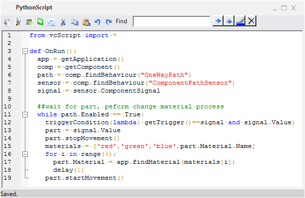
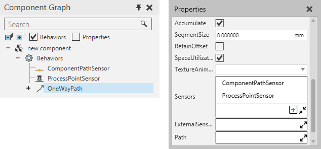
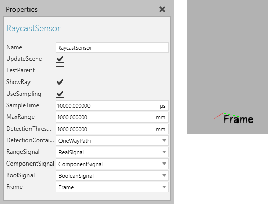

Sensor used to trigger process for component at point in path
A sensor type behavior is used to detect components.
Contents Hide
| Name | Description |
| Component Path Sensor | Detects a component moving on a path. |
| Process Point Sensor | Detects a component moving on a path, and then can either stop the path or detected component. |
| Raycast Sensor | Detects a component intersecting a ray cast along an axis. |
| Volume Sensor | Detects a component intersecting or within a space. |
Some sensors need to be assigned to paths in order to detect components.

Other sensors can detect components freely in the 3D world or be filtered to only detect components in a container.

RayCast Sensor filtered to detect components and distances in a path
In most cases, sensors use signals to inform other behaviors of detected components. For example, signals used by sensors can be connected to a Python Script in order to trigger events.

Sensor used to trigger process for component at point in path